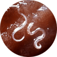
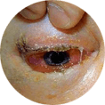
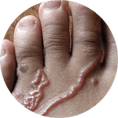
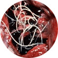
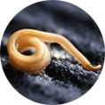
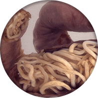
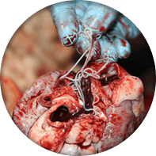
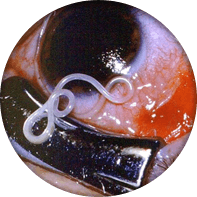

Perhatian!
Parasit membahayakan nyawa!
-

Giardia, opisthorchis, dan cacing benang
Memengaruhi kandung kemih dan hati, sehingga menyebabkan pendarahan, nanah, dan kanker.
-

Cacing otot
Dapat menginfeksi organ apa pun dalam tubuh. Sering menyebabkan edema paru-paru dan memengaruhi sistem saraf pusat.
-

Cacing tambang
Parasit ini menjadikan darah manusia sebagai sumber makanannya dan menyebabkan anemia. Parasit ini tinggal di dekat jantung dan merusak pembuluh darah.
-

Ascaris, telur askaris
Menyebabkan alergi berat dan asma. Parasit ini juga menyebabkan hidrosefalus pada bayi baru lahir.
-

Cacing kremi
Cacing kremi akan mengganggu fungsi pencernaan dan menyebabkan infeksi usus.
Beragam spesies parasit dapat ditemukan di dalam hampir
80% tubuh semua orang!
- Konstipasi, diare, kembung
- Gigi mengerat saat tidur (bruxism)
- Papiloma di tubuh dan membran mukus
- Terlalu kurus atau gemuk
- Kelelahan kronis
- Masalah kulit
- Keringat berlebih
- Mendengkur dan apnea tidur
- Napas bau
-
Mengembalikan fungsi sistem kekebalan tubuh
-
Menguras parasit dari dalam tubuh secara alami
-
Melumpuhkan sistem saraf parasit
-
Menghambat perkembangbiakan parasit
penghisap darah
(kucing, anjing, hamster)
umum
Perhatian!
Parasit membahayakan nyawa!
-

Usus yang penuh dengan parasit dalam waktu 10 tahun. Hal ini bisa menyebabkan pecahnya usus dan kematian.
-

Cacing hati dapat menyebabkan kerusakan pada dinding pembuluh darah yang menyebabkan pendarahan di dalam tubuh.
-

Sistiserkosis yang menginfeksi otak menyebabkan kerusakan bola mata yang tidak dapat disembuhkan. Bola mata tidak mungkin pulih kembali!
Mengapa 9 dari 10 spesialis merekomendasikan
Mengapa 9 dari 10 spesialis merekomendasikan
-
100%
efektif mengobati semua masalah saluran pencernaan
-
91%
menormalkan berat badan
-
100%
mengobati alergi
-
83%
menormalkan waktu tidur
-
78%
mengobati masalah kulit
-
Inilah hasil pemeriksaan kesehatan dari 1.000 relawan yang menggunakan Hermuno selama satu bulan.
Phyllanthus niruri
Meniran hijau membersihkan parasit dari sistem pencernaan dan sistem urogenital.
Andrographis paniculata
Sambiloto adalah imunomodulator yang sempurna. Sambiloto mengobati penyakit menular yang sudah ada sebelumnya.
Centella Asiatica
Pegagan memecah telur parasit dan mengeluarkannya dari dalam tubuh. Pegagan juga mempercepat penyembuhan jaringan yang rusak.
Curcuma Xanthorrhiza Rhizoma
Temulawak sudah digunakan untuk mengobati infeksi parasit yang menyerang hati, ginjal, dan jantung selama bertahun-tahun.
Sayangnya, banyak orang percaya bahwa jika mereka mencuci tangan dengan baik, memasak makanan sampai matang, dan menghindari kontak dengan hewan, mereka tidak akan terinfeksi parasit. Itu semua tidak benar! Siapa pun bisa terinfeksi! Sebagian besar obat antiparasit memberikan pengaruh negatif bagi tubuh karena tidak hanya membunuh parasit, tetapi juga sel-sel tubuh yang sehat. Hermuno bekerja dengan hati-hati tanpa membahayakan kesehatan dan tidak memberikan pengaruh buruk. Selain itu, Hermuno juga berbeda dengan obat lainnya karena produk ini juga dapat digunakan untuk pencegahan.
Mendeteksi parasit dalam tubuh sama sulitnya seperti mendetoksifikasi tubuh. Sebelumnya, saya harus meminta pasien saya untuk melakukan banyak tes medis untuk mengetahui apakah ada tanda-tanda infeksi parasit. Sekarang, ada obat yang membuat semua tes ini tidak dibutuhkan lagi. Obat itu adalah Hermuno. Hermuno membersihkan parasit dari dalam tubuh, baik parasit dewasa maupun telurnya. Hermuno mengeluarkan parasit dari dalam tubuh secara alami. Setelah menjalani perawatan dengan Hermuno, semua orang pasti akan terbebas dari parasit!